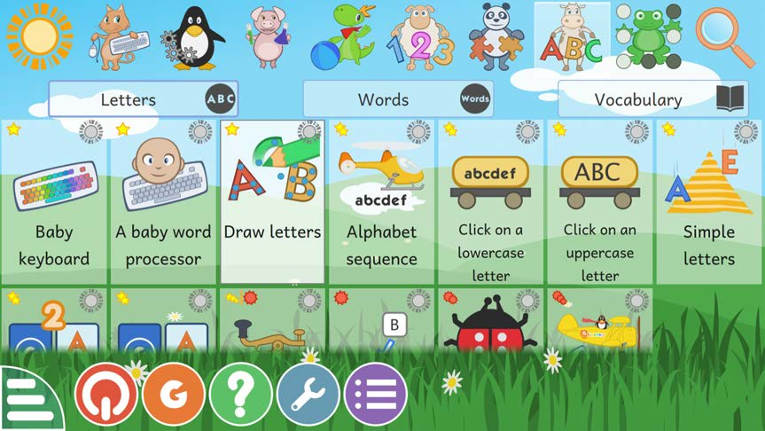
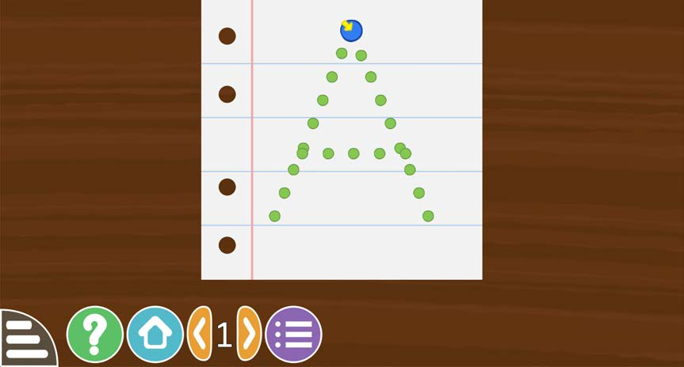

Lesson 1 - Steps iv and v
(iv) Select a ‘draw letters’ option to get dotted letters.

(v) This is the dotted letters game.

(iv) Select a ‘draw letters’ option to get dotted letters.

(v) This is the dotted letters game.
